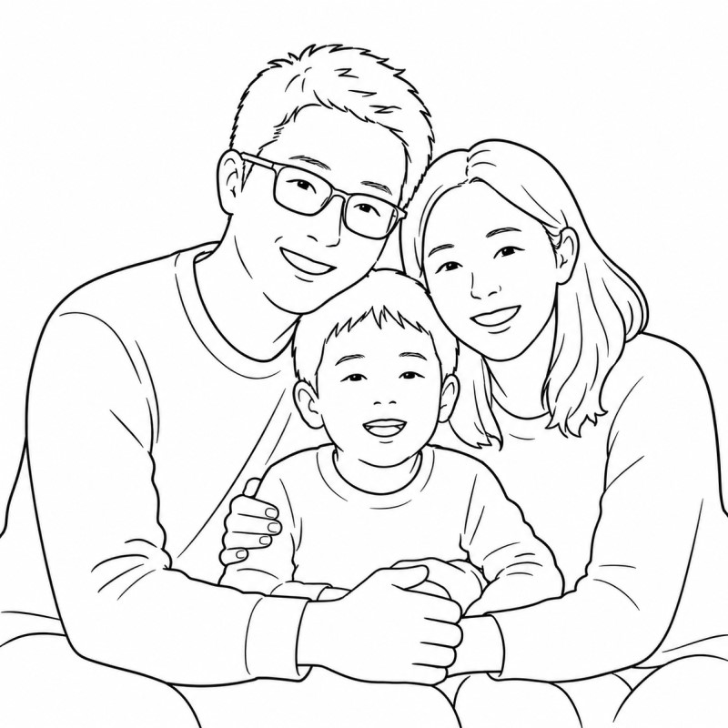
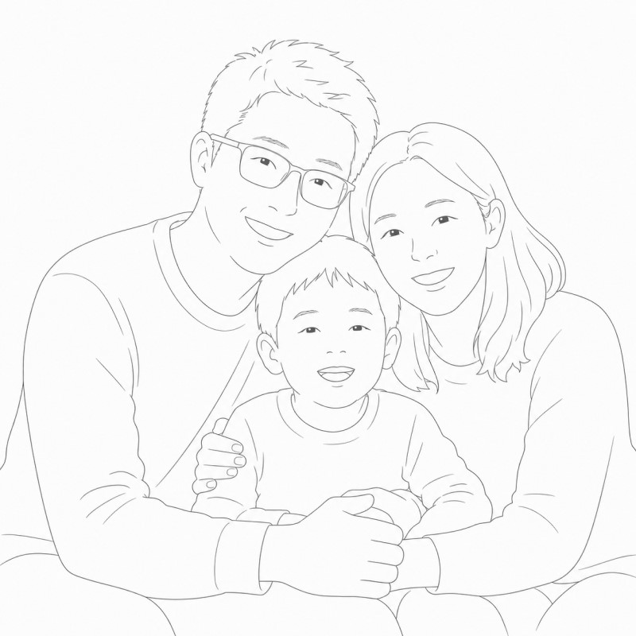
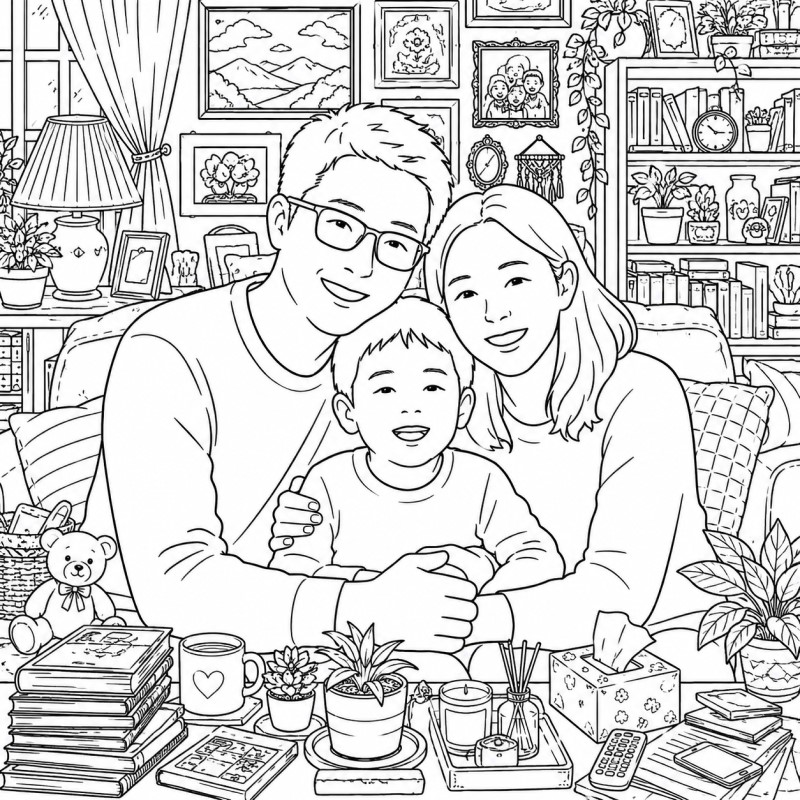

成為創作者
樂活刻圖市集,是一個讓設計被看見、被珍藏的地方。
投稿你的原創刻圖,作品有機會被顧客選用,雷雕在眼鏡、鏡片或周邊配件上。
作品被戴進日常
你的設計不只停留在螢幕,而是被雷雕在實體眼鏡的鏡腳、鏡片或鏡框上,被陌生人帶上街、成為日常物件的一部分。
被選用就有回饋
當顧客選用你的設計刻在眼鏡上,即累積你的創作者分潤。一張圖、一份持續的收入。
讓更多人看見
透過官網創作者市集與樂活全台門市雙曝光,你的作品有機會被 60 萬樂活會員看見。
投稿流程
上傳作品
填寫作品名稱、分類與設計檔。
樂活確認
專人於 3 個工作天內確認檔案是否適合雷射雕刻。
上架市集
通過後作品出現在刻圖市集,開放顧客選用。
被選用累積分潤
顧客選用刻在眼鏡上,即累積你的創作者回饋。
製作指南
雷射雕刻的物理特性,決定了哪些設計能完美呈現、哪些需要調整。
以下是讓你的作品在眼鏡上發光的設計建議。
推薦投稿風格
極簡線條
適合寵物、花草、符號、紀念圖案。
可愛手繪
適合親情、寵物、生日、祝福小圖。
照片轉線稿
適合寵物、人像、紀念照片,需簡化細節。
手繪整理
適合手稿、孩子畫、簽名、草圖。
什麼圖案適合雷刻?
- 黑白線條清楚
- 主體明確
- 外輪廓清楚
- 細節精簡
- 文字夠大
- 黑色面積太多整個主體填黑,刻出來變黑塊
- 背景太複雜沙發、桌子、窗簾會搶主題
- 線條太細鬍鬚、簽名縮小後消失
- 灰階陰影太多像鉛筆素描,雷刻無法呈現
- 字太小太密縮到指甲大小看不清




檔案規格
常見問題
以下整理了大家最常問的問題。如果還有其他疑問,歡迎透過 LINE 客服聯繫我們。
Q1. 我可以買 / 訂製這些刻圖嗎?
Q2. 刻圖會出現在眼鏡的哪裡?
Q3. 我能修改圖案的字 / 顏色嗎?
Q4. 從下單到拿到刻好的眼鏡要多久?
Q5. 誰能投稿?需要先成為樂活會員嗎?
Q6. 投稿要準備什麼樣的檔案?
Q7. 從上傳到審核通過需要多久?
Q8. 我可以從刻圖賺到分潤嗎?怎麼領?
Q9. 被退件可以再投嗎?
Q10. 我可以下架自己的作品嗎?
作品規範與審核說明
上傳作品前,請務必詳閱以下規範。送出作品即視為同意本規範與著作權授權條款。
哪些內容無法通過審核?
作品不得包含以下內容:
- 侵權素材或未經授權內容(網路迷因、電影截圖、動畫角色、名人肖像等)
- 髒話、暴力、色情、歧視性內容
- 宗教攻擊、政治仇恨或敏感議題
- 其他違法或不當資訊
- 大面積黑色色塊、圖案不完整等,會影響實際雷刻成果之內容
審核時間與退件處理
審核時間:約 5–7 個工作天(不含例假日)。
常見退件原因:侵權內容、違法或敏感題材、畫質模糊或解析度過低、不符合平台規範。
退件後處理:系統將提供退件原因。退件作品不可直接重新上架,需重新製作後再次提交審核,通過後方可公開上架。
作品數量與修改規範
- 每位使用者最多可同時上架 10 件作品。
- 新增作品前,需先將既有作品下架;下架後若再次上架,需重新送審。
可修改:作品文字說明(修改後需重新審核)。
不可修改:圖片內容、構圖、底圖、設計風格、版型配置。如需更換圖片或設計內容,請重新製作作品並再次送審。
分潤與收益說明
分潤金額:每次被選用 100 元／次,收益可累積、無上限。
匯款:累積至 500 元後,每月 15 號匯款(遇假日順延)。
銀行帳號綁定:請先於 APP 完成綁定 — APP → 會員專區 → 個人資料維護 → 刻圖市集 → 帳戶資訊,填寫並更新即可。請務必確認資料正確,以免影響匯款。
- 分潤一律採匯款轉帳,非元大銀行須扣除手續費。
- 若因帳戶資訊填寫錯誤導致出款錯誤,樂活眼鏡概不負責。
- 帳號設立前已累積的獎金,將持續累積至帳戶資訊成立後。
下架後收益:上架期間產生的收益完整保留;下架後不再新增使用次數與收益。若重新上架,需再次通過審核後才會重新計算。
帳號資格與使用條款
未成年人使用:未滿法定成年年齡之使用者,須經法定代理人同意方可使用。未成年人於平台之所有操作及其法律效果,均視為已取得法定代理人授權,並由使用者與其法定代理人共同承擔責任。
帳號使用提醒:建議每位使用者使用個人專屬帳號,不建議共用,以避免著作權與收益歸屬爭議、操作紀錄難以釐清、帳號安全性降低等風險。因帳號共用所生之爭議或損失,樂活眼鏡恕無法介入或負擔責任。
著作權與使用授權
使用者上傳、提交或上架作品,即視為已瞭解並同意授權樂活眼鏡於平台服務與營運範圍內使用該作品,包括但不限於:作品公開展示、平台上架呈現、提供消費者選用及實際使用。
前述授權屬非獨家授權,使用者仍保有作品之完整著作權。樂活眼鏡得於營運範圍內無須額外付費使用、呈現及管理該作品。若不同意本條款,請勿上傳作品;一經上傳即視為同意並受本條款約束。
著作權紀錄:平台將保存作品上架時間、被選用次數與時間、創作者帳號與作者身分等紀錄,作為權利歸屬與事實認定之佐證。實際法律主張與爭議仍由創作者自行依法處理,平台不介入個別爭議之實質判斷。
建議創作者妥善保存作品原始資料(原始設計檔、圖層檔、手稿掃描、創作過程紀錄等),以便必要時作為權利主張之輔助證據。